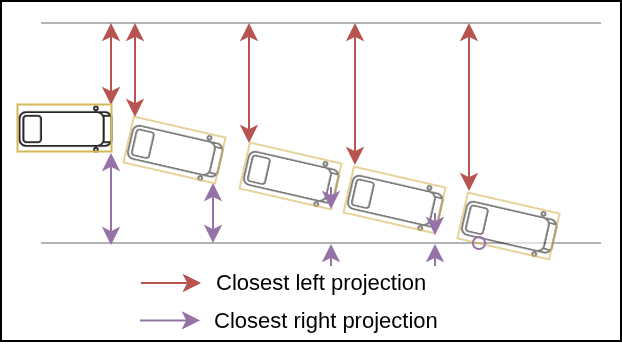

Boundary Departure Prevention Module#
Warning
The Boundary Departure Prevention Module is experimental. It subscribes to the control modules predicted path and steering report, creating a circular dependency. This violates Autowares design principle of forward-only data flow, where control depends on planning, not the other way round. As a result, this module is not officially supported and will remain unofficial for the foreseeable future.
Role#
This module inserts slow down points and publishes error diagnostics when the ego vehicle is near or about to cross an uncrossable boundary, such as a road border.
It also accounts for several types of erroneous behavior that could cause the vehicle to unintentionally cross these boundaries. These behaviors are classified as abnormalities.
Abnormalities#
Abnormalities refer to erroneous behaviors at the component level, often caused by noisy or unreliable outputs. In this module, these abnormalities are embedded into the predicted footprints derived from the control module's predicted path, specifically, the MPC (Model Predictive Control) trajectory. Each point along the MPC path is converted into a footprint, and potential deviations due to abnormal conditions are evaluated.
The module addresses the following types of abnormalities:
1. Normal (No Abnormality)#
In typical operation, the MPC trajectory may contain small deviations or noise, especially when the vehicle cannot track the planned path perfectly. These deviations are minor and not necessarily the result of a malfunction, but they are still accounted for to ensure safe boundary handling.
Localization Abnormality#
Localization errors can cause the ego vehicle to misjudge its position relative to road boundaries such as curbs or road edges. This can happen due to:
- Sensor noise or drift, leading to inaccurate pose estimation.
- Map inaccuracies, where the HD maps geometry does not precisely align with the real-world boundary.
- Dynamic uncertainty at higher speeds, where even small errors are magnified due to the vehicle covering more distance in less time, reducing the margin for correction.
These factors can result in the vehicle unintentionally approaching or crossing an uncrossable boundary, even when the planned path appears valid.
How Footprint Expansion Helps with Localization and Map Errors#
- Provides a conservative buffer for localization errors: If the ego vehicles estimated position is off due to GPS drift or sensor noise, the expanded footprint increases the likelihood of detecting potential boundary conflicts. While this may lead to conservative (and possibly false) detections, it helps ensure safety by accounting for uncertainty in the vehicles true position.
- Compensates for map inaccuracies: Slight misalignments in Lanelet2 map geometries, such as curb or road edge misplacement, can make it difficult to rely on raw map boundaries. Expanding the footprint ensures that even with these inaccuracies, the system remains cautious and avoids unintentional boundary violations.
| Without Abnormality Margins | With Localization Abnormality Margin |
|---|---|
By expanding the footprint, the system introduces a safety margin that accounts for minor localization and mapping uncertainties, especially critical at higher speeds.he expanded footprint creates a small buffer or "safety margin," allowing the vehicle to operate safely despite minor abnormality.
Steering Abnormality#
Unexpected steering behavior can cause the vehicle to deviate from its planned trajectory. Instead of using a simple margin, this module simulates a future trajectory based on a bicycle model with modified steering commands to predict potential deviations. This can occur due to:
- Actuator faults: such as delayed or stuck steering commands.
- Software issues: like frozen control outputs or bugs in the steering optimization logic.
- Unexpected maneuvers: for example, emergency avoidance or unintended sharp turns.
In such cases, the actual motion of the vehicle diverges from the MPC trajectory, increasing the risk of departure.
How steering simulation helps with steering abnormality#
The module simulates a new vehicle trajectory using a bicycle model, where the steering commands are intentionally modified to represent a worst-case scenario. This simulation includes:
- Actuator Delay: A delay is introduced to the steering commands to simulate actuator latency.
- Steering Magnification: The original steering commands from the trajectory are multiplied by a factor to simulate over- or under-steering.
- Steering Offset: A constant offset is added to the steering commands to simulate a drift.
- Rate Limiting: The rate of change of the steering angle is limited based on the vehicle's velocity to ensure the simulation is physically realistic.
- Physical Limits: The final steering angle is clamped to the vehicle's maximum physical steering angle.
This simulated trajectory is then used to create a set of predicted footprints, which are checked for boundary departures. This allows the system to proactively detect and mitigate risks from steering abnormalities.
| Example steering abnormality trajectories |
|---|
 |
Longitudinal Tracking Abnormality#
Sometimes, the actual motion of the vehicle along the longitudinal axis does not match the MPC-predicted trajectory. For instance:
The ego vehicle might be ahead or behind the predicted position due to mismatches in acceleration or braking behavior.
This discrepancy becomes more problematic when the vehicle is near an uncrossable boundary, as it reduces the reliability of future footprint predictions.
How Longitudinal Expansion Helps with Tracking Abnormality#
- Accounts for ego being ahead of the predicted pose: During lane changes, avoidance maneuvers, or turns on curved roads, the ego vehicle may move faster than expected or take a slightly different path than predicted. By extending the footprint longitudinally (in the direction of motion), the system accounts for the ego vehicle possibly being ahead of the current MPC trajectory point.
- Uses speed-scaled margins: The longitudinal margin is scaled based on the current vehicle speed, with an added buffer. At higher speeds, a larger margin is used to reflect the increased risk and reduced reaction time.
- Captures mismatches during dynamic maneuvers: In situations where heading is changing quickly, like on curved roads or during lateral motion, the egos actual position may significantly deviate from the MPC path. The extended footprint covers this discrepancy and helps detect boundary risks even if the predicted path appears safe.
| Without Abnormality Margins | With Longitudinal Tracking Abnormality Margin |
|---|---|
 |
 |
This approach helps bridge the gap between prediction and reality. By expanding the footprint in the heading direction, the system ensures safe operation even when there are longitudinal tracking mismatches due to control delay, road surface changes, or other dynamic factors.
Types of Departure#
The Boundary Departure Prevention Module classifies boundary risk into three types, each representing a different level of severity based on the proximity between the predicted footprint (including abnormality margins) and the road boundary.
| Near-Boundary | Approaching Departure and Critical Departure |
|---|---|
 |
1. Near-Boundary#
The ego vehicle is approaching a road boundary but remains within a tolerable margin. This condition may arise:
- On narrow roads or lanes with minimal space.
- When expanded abnormality margins bring the footprint closer to the edge.
- During turns or lateral maneuvers near curbs.
2. Approaching Departure#
The ego vehicle is still some distance away from the boundary, but its predicted path will eventually lead to a critical departure if no action is taken. This condition is triggered only when a critical departure is detected at a future point along the path.
3. Critical Departure#
A portion of the normal (non-expanded) ego footprint crosses an uncrossable boundary. This condition is treated as a safety-critical violation.
Unlike other departure types, abnormality margins are not considered in this judgment. Including them would increase the risk of false positives, especially on narrow or constrained roads. Instead, only the actual predicted footprint is used to determine a critical departure. Upon detecting a critical departure:
- The module does not insert a stop, but instead, it relies on previously triggered Approaching Departure to have already reduced the vehicles speed.
- The module can publish a diagnostic status, which can be configured to escalate to ERROR level.
- The ERROR level diagnostic can be connected to an external MRM (Minimum Risk Maneuver) system, which is responsible for issuing a full stop command.
Processing Flow#
The following diagram shows the high-level processing flow of the Boundary Departure Prevention Module. It outlines the steps from checking proximity to the goal, through trajectory and abnormality analysis, to the publication of debug and diagnostic data.
![uml diagram]()
Generating abnormalities data#
The diagram below illustrates how the module processes predicted trajectory points to generate footprints with embedded abnormality margins and find their projections relative to nearby map boundaries.
![uml diagram]()
Determining Closest Projection to Boundaries#
To assess how close the ego vehicle is to nearby uncrossable boundaries, the BoundaryDepartureChecker class calculates the nearest lateral projection between each predicted footprint and the map boundary segments. This is done separately for the left and right sides of the vehicle.
Each footprint includes left and right edge segments. These segments are projected onto nearby map segments to compute the shortest lateral distance from the vehicle to the boundary.
For each pair of ego-side and boundary segments:
- If the segments intersect, the intersection point is used as the projection result.
- If not, the algorithm checks all endpoint-to-segment projections, from the ego footprint segment to the boundary segment, and vice versa.
- Among all valid candidates, the one with the shortest lateral distance is selected.
The projection function returns the projected point on the boundary, the corresponding point on the ego segment, and the computed distance.
Example of the nearest projections are shown in the following images:
| Going near the boundary | Heading towards and departing from boundaries |
|---|---|
 |
 |
- Each vehicle box represents a predicted footprint along the path.
- Red arrows show the closest projection to the left boundary.
- Purple arrows show the closest projection to the right boundary.
Find and update departure intervals#
Warning
TBA
Get slow down intervals#
Warning
TBA
Parameters#
| Name | Type | Description | Default | Range |
|---|---|---|---|---|
| boundary_types_to_detect | array | Linestring boundary tags to be treated as uncrossable. | ['road_border'] | N/A |
| th_max_lateral_query_num | integer | Number of nearest boundaries to search from each ego side segment. | 5 | N/A |
| th_point_merge_distance_m | float | Distance threshold to merge nearby points [m]. | 1.0 | N/A |
| th_pt_shift.dist_m | float | Distance threshold to discard points on shifted paths [m]. | 0.2 | N/A |
| th_pt_shift.angle_deg | float | Angle threshold to discard points on shifted paths [deg]. | 5.0 | N/A |
| th_pt_shift.goal_dist_m | float | Minimum goal shift distance to trigger module reset [m]. | 1.0 | N/A |
| th_cutoff_time_s.predicted_path | float | Cutoff time to consider from predicted path [s]. | 3.5 | N/A |
| th_cutoff_time_s.near_boundary | float | Cutoff time to consider departure point as near boundary type [s]. | 3.5 | N/A |
| th_cutoff_time_s.departure | float | Cutoff time to consider departure point as critical departure type, anything more than is considered approaching departure [s]. | 2.0 | N/A |
| on_time_buffer_s.near_boundary | float | Continuous detection time threshold to insert departure point into departure interval. [s] | 0.15 | N/A |
| on_time_buffer_s.critical_departure | float | Continuous detection time required to accept new critical departure point. [s] | 0.15 | N/A |
| off_time_buffer_s.near_boundary | float | Continuous detection time threshold to reset departure interval. [s] | 0.15 | N/A |
| off_time_buffer_s.critical_departure | float | Continuous detection time threshold to reset critical departure. [s] | 0.15 | N/A |
| normal.enable | boolean | Enable basic footprint margin expansion without any condition. | true | N/A |
| footprint_envelop.lon_m | float | Longitudinal margin added to footprint [m]. | 0.25 | 0.0 |
| footprint_envelop.lat_m | float | Lateral margin added to footprint [m]. | 0.25 | 0.0 |
| localization.enable | boolean | Enable additional margin to handle localization uncertainty. | true | N/A |
| footprint_envelop.lon_m | float | Longitudinal margin added to footprint [m]. | 0.25 | 0.0 |
| footprint_envelop.lat_m | float | Lateral margin added to footprint [m]. | 0.25 | 0.0 |
| longitudinal.enable | boolean | Enable velocity-based dynamic longitudinal margin adjustment | true | N/A |
| lon_tracking.scale | float | Scale factor for margin based on velocity. | 1.0 | N/A |
| lon_tracking.extra_margin_m | float | Extra margin added on top of velocity-based margin [m]. | 0.0 | N/A |
| steering_accelerated.enable | boolean | Enable footprint obtained from re-simulating the steering of the predicted trajectory | false | N/A |
| steering_accelerated.steering_rate_velocities_mps | array | velocities [m/s] used as keys for the steering rate limits mapping. | [0.0, 3.5, 9.1, 14.7, 20.3, 25.9, 31.5] | N/A |
| steering_accelerated.steering_rate_limits_rps | array | steering rate limits [rad/s] mapped from the velocities | [3.14, 0.777, 0.115, 0.044, 0.023, 0.014, 0.01] | N/A |
| steering_accelerated.delay_s | float | [s] delay to apply to the re-simulated steering | 0.0 | N/A |
| steering_accelerated.offset_rps | float | [rad/s] extra steering rate to add to the original steering profile | 0.0 | N/A |
| steering_accelerated.factor | float | [-] factor to apply to the original steering profile | 1.2 | N/A |
| steering_stuck.enable | boolean | Enable footprint obtained from re-simulating the steering of the predicted trajectory | false | N/A |
| steering_stuck.steering_rate_velocities_mps | array | velocities [m/s] used as keys for the steering rate limits mapping. | [0.0, 3.5, 9.1, 14.7, 20.3, 25.9, 31.5] | N/A |
| steering_stuck.steering_rate_limits_rps | array | steering rate limits [rad/s] mapped from the velocities | [3.14, 0.777, 0.115, 0.044, 0.023, 0.014, 0.01] | N/A |
| steering_stuck.delay_s | float | [s] delay to apply to the re-simulated steering | 0.0 | N/A |
| steering_stuck.offset_rps | float | [rad/s] extra steering rate to add to the original steering profile | 0.0 | N/A |
| steering_stuck.factor | float | [-] factor to apply to the original steering profile | 0.0 | N/A |
| steering_sudden_left.enable | boolean | Enable footprint obtained from re-simulating the steering of the predicted trajectory | false | N/A |
| steering_sudden_left.steering_rate_velocities_mps | array | velocities [m/s] used as keys for the steering rate limits mapping. | [0.0, 3.5, 9.1, 14.7, 20.3, 25.9, 31.5] | N/A |
| steering_sudden_left.steering_rate_limits_rps | array | steering rate limits [rad/s] mapped from the velocities | [3.14, 0.777, 0.115, 0.044, 0.023, 0.014, 0.01] | N/A |
| steering_sudden_left.delay_s | float | [s] delay to apply to the re-simulated steering | 0.0 | N/A |
| steering_sudden_left.offset_rps | float | [rad/s] extra steering rate to add to the original steering profile | 0.2 | N/A |
| steering_sudden_left.factor | float | [-] factor to apply to the original steering profile | 1.0 | N/A |
| steering_sudden_right.enable | boolean | Enable footprint obtained from re-simulating the steering of the predicted trajectory | false | N/A |
| steering_sudden_right.steering_rate_velocities_mps | array | velocities [m/s] used as keys for the steering rate limits mapping. | [0.0, 3.5, 9.1, 14.7, 20.3, 25.9, 31.5] | N/A |
| steering_sudden_right.steering_rate_limits_rps | array | steering rate limits [rad/s] mapped from the velocities | [3.14, 0.777, 0.115, 0.044, 0.023, 0.014, 0.01] | N/A |
| steering_sudden_right.delay_s | float | [s] delay to apply to the re-simulated steering | 0.0 | N/A |
| steering_sudden_right.offset_rps | float | [rad/s] extra steering rate to add to the original steering profile | -0.2 | N/A |
| steering_sudden_right.factor | float | [-] factor to apply to the original steering profile | 1.0 | N/A |
| diagnostic.near_boundary | integer | Diagnostic level when vehicle is near a boundary (0:OK,1:WARN,2:ERROR). | 1 | N/A |
| diagnostic.approaching_departure | integer | Diagnostic level when vehicle is moving toward a boundary (0:OK,1:WARN,2:ERROR). | 1 | N/A |
| diagnostic.critical_departure | integer | Diagnostic level when vehicle is likely to leave the boundary (0:OK,1:WARN,2:ERROR). | 1 | N/A |
| enable.slow_down_near_boundary | boolean | Enable speed reduction when near boundary. | false | N/A |
| enable.slow_down_before_departure | boolean | Enable speed reduction just before departure. | false | N/A |
| enable.stop_before_departure | boolean | Enable speed reduction if near departure. | false | N/A |
| th_vel_kmph.min | float | Minimum speed for the slow down logic [km/h]. | 5.0 | N/A |
| th_vel_kmph.max | float | Maximum speed to consider for interpolating deceleration [km/h]. | 30.0 | N/A |
| th_acc_mps2.min | float | Comfortable deceleration when slowing down [m/s]. | -1.0 | N/A |
| th_acc_mps2.max | float | Hardest deceleration allowed when slowing down [m/s]. | -2.5 | N/A |
| th_jerk_mps3.min | float | Minimum jerk value applied during slowdown interpolation [m/s]. | -1.0 | N/A |
| th_jerk_mps3.max | float | Maximum jerk value applied during slowdown interpolation [m/s]. | -1.5 | N/A |
| th_trigger.brake_delay_s | float | Time delay before deceleration starts after triggering slowdown [s]. | 1.3 | N/A |
| th_trigger.dist_error_m | float | Allowed stopping error distance from the desired stopping point [m]. | 1.0 | N/A |
| left.min | float | Closest lateral distance from the boundary used for velocity and jerk interpolation [m]. | 0.01 | N/A |
| left.max | float | Furthest lateral distance from the boundary used for velocity and jerk interpolation [m]. | 0.5 | N/A |
| right.min | float | Closest lateral distance from the boundary used for velocity and jerk interpolation [m]. | 0.01 | N/A |
| right.max | float | Furthest lateral distance from the boundary used for velocity and jerk interpolation [m]. | 0.5 | N/A |